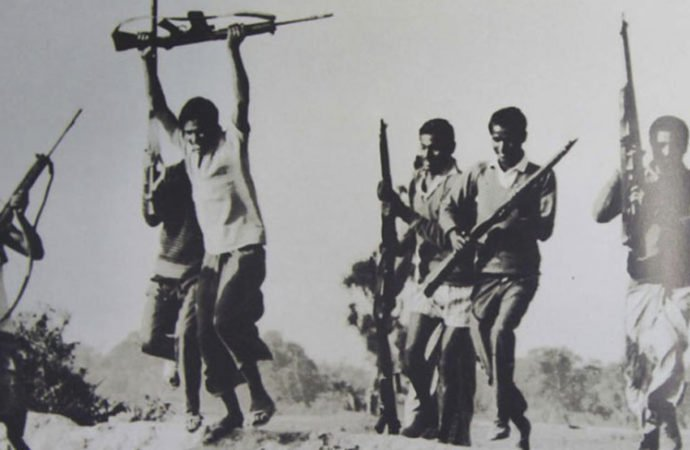

মুক্তিযুদ্ধের ইতিহাস
১. পটভূমিঃ
আমাদের জাতীয় ইতিহাসের শ্রেষ্ঠতম অধ্যায় হলো একাত্তরের মুক্তিযুদ্ধ। এই মুক্তিযুদ্ধের মধ্য দিয়ে জন্মলাভ করে স্বাধীন সার্বভৌম বাংলাদেশ।পাকিস্তান নামের রাষ্ট্র গঠনের প্রস্তাব করা হয়। ১২ আগস্ট প্রকাশিত র্যাডক্লিপ রোয়েদাদে
পূর্ব বঙ্গ ও পশ্চিম বঙ্গেঁর মধ্যে সীমানা আনুষ্ঠানিকভাবে নির্ধারিত হয়। পাকিস্তান প্রতিষ্ঠা হলো ১৯৪৭ সালের ১৪ আগস্ট। পূর্ব বাংলা হয় পাকিস্তানের অংশ-পূর্ব পাকিস্তান। পূর্ব থেকে জনগণ আশা করেছিলেন, এবার তাঁদের আশা-আকাঙ্খা পূরণ হবে।
তাঁদের প্রত্যাশিত স্বাধীনতা নতুন রাষ্ট্রে প্রতিষ্ঠিত হবে। উন্নত জীবনের অধিকারী হবেন। কিছুদিনের মধ্যেই পূর্ব পাকিস্তানের জনগণ অনুভব করলেন, তাদের প্রত্যাশা পূর্ণ হওয়ার নয়। পাকিস্তানের শাসকবর্গ বহুবাচনিক সমাজে পূর্ব পরিকল্পিত ঐক্যবদ্ধ
একক সংস্কৃতি প্রতিষ্ঠার ষড়যন্ত্র করেছে। রাজনৈতিক ক্ষেত্রে পূর্ব পাকিস্তানের জনগণের অংশগ্রহণের ক্ষেত্র সংকুচিত করা হচ্ছে। অর্থনৈতিক ক্ষেত্রে তাঁরা বঞ্চনার শিকার হয়েছেন। এমন কি পূর্ব পাকিস্তানের সম্পদে পশ্চিম পাকিস্তানের উন্নয়ন নিশ্চিত
করার ব্যবস্থা করা হয়েছে।এভাবে র্পূব পাকিস্তান স্বাধীনতা সংগ্রামরে পটভূমি তৈরি হয়। ১৯৫২ সালে নিজস্ব ভাষার অধিকার রক্ষার জন্য জীবন দান করতে হয় পূর্ব পাকিস্তানের ছাত্র জনতার। ১৯৫৮ সালে জেনারেল আইয়ুব খান সামরিক শাসন জারি করে ক্ষমতা
দখল করে। ১৯৬৬ সালের ৫ ফেব্রুয়ারি বঙ্গবন্ধু শেখ মুজিবুর রহমান বাঙ্গালীর স্বায়ত্বশাসন প্রতিষ্ঠা করার লক্ষে ছয় দফা দাবি পেশ করেন। ছয় দফা ম্যান্ডেট নিয়ে পাকিস্তানে ১৯৭০ সালের ৭ ডিসেম্বর সর্বপ্রথম অনুষ্ঠিত সাধারণ নির্বাচনে পূর্ব পাকিস্তানের
রাজনৈতিক দল একক সংখ্যাগরিষ্ঠতা নিয়ে জয়লাভ করে আওয়ামী লীগ। পাকিস্তানের জাতীয় পরিষদে সংখ্যাগরিষ্ঠ দল হিসেবে তার উত্তরণ ঘটে। জনগণ প্রত্যাশা করেছিল নির্বাচিত রাজনৈতিক দল আওয়ামী লীগ সরকার গঠন করে পূর্ব পাকিস্তানের দীর্ঘদিনের বঞ্চনার
ইতিহাসের গতি পাল্টাবেন। পাকিস্তানের শাসকবর্গ-কিছু রাজনৈতিক নেতা এবং কিছু সামরিক কর্মকর্তা-ষড়যন্ত্রের গ্রন্থিগুলো এমনভাবে বিন্যস্ত করেন যেন শাসন ক্ষমতা কোনক্রমে বাঙ্গালীর হস্তগত না হয়। পূর্ব পাকিস্তানের জনগণ তা সঠিকভাবে অনুধাবন
করেন।
২. ভাষা আন্দোলনঃ
পাকিস্তান প্রতিষ্ঠার পর থেকে পূর্ব পাকিস্তানের জনগণ বাংলাকে অন্যতম রাষ্ট্রভাষা করার দাবি জানিয়ে আসছলি। পাকিস্তান সরকার এ যৌক্তিক দাবির সম্পূর্ণ বিরোধিতা করে ১৯৪৮ সালেই উর্দুকে একমাত্র সরকারি ভাষা হিসেবে ঘোষণা
করে। এই সিদ্ধান্তের বিরুদ্ধে ক্রমবর্ধমান প্রতিবাদ চলতে থাকে যা পরবর্তীতে ভাষা আন্দোলন নামে পরিচিতি লাভ করে। এ আন্দোলন পুনরুজ্জীবিত হয় ১৯৫২ সালে এবং সেই বছরের ২১ ফেব্রুয়ারি ভাষার দাবিতে ঢাকা বিশববিদ্যালয় প্রাঙ্গনে ছাত্ররা একত্রিত
হয়। পুলিশ এ জনসমাবেশের উপর গুলি চালানোর ফলে রফিক, সালাম, বরকত, জববারসহ আরো অনেকে শহীদ হয়। এই ঘটনা আন্দোলনকে এক নতুন মাত্রা দান করে এবং রাজনৈতিক গুরুত্ব বহুমাত্রায় বাড়িয়ে দেয়। ১৯৫৬ সালে চূড়ান্তভাবে সংবিধানে বাংলাকে উর্দূর পাশাপাশি
অন্যতম প্রধান জাতীয় ভাষা হিসেবে গ্রহণ করা হয়। ভাষা আন্দোলনকে পূর্ব পাকিস্তানে বাঙালি জাতীয়তাবাদের উত্থান হিসেবে উল্লেখ করা হয় এবং ৬ দফা আন্দোলন, ৬৯ এর গণঅভ্যুত্থান বাংলাদেশের মুক্তিযুদ্ধের পথে একটি গুরুত্বপূর্ণ ধাপ হিসেবে বিবেচনা
করা হয়।
৩. ১৯৫৪ সালের যুক্তফ্রন্ট সাধারণ নির্বাচন ও ১৯৫৮ সালের সামরিক শাসনঃ
১৯৫৪ সালে ১০ই র্মাচ পাকিস্তানের সাধারণ নির্বাচনে র্পূববঙ্গে যুক্তফ্রন্ট সংখ্যাগরিষ্ঠতা অর্জন করে সরকার গঠন করে। কিন্তু পাকিস্তান শাষকগোষ্ঠী বাঙালির এই আধিপত্য
মেনে নিতে পারেনি। মাত্র আড়াই মাসের মধ্যে ৩০শে মে কেন্দ্রীয় সরকারের নির্দেশে মন্ত্রিসভা ভেঙ্গে দিয়ে রাষ্ট্রপতি শাসন জারি করা হয়। ১৯৫৯ সালে সমগ্র পাকিস্তানে সাধারণ নির্বাচনের সময় নির্ধারিত হলে বাঙালিদের মধ্যে বিপুল সাড়া দেখা দেয়।
জনসংখ্যার ৫৬ ভাগ বাঙালি, অতএব এই নির্বাচনের ফলাফল চিন্তা করে কেন্দ্রীয় সরকার নির্বাচন বানচালের ষড়যন্ত্রে লিপ্ত হয়। একই সময়ে সামরিক বাহিনী ক্ষমতা দখলের কৌশলে কেন্দ্রীয় সরকারের মধ্যেও বিরোধ সৃষ্টি করে। এই ধারাবাহিকতায় ১৯৫৮ সালের
৭ই অক্টোবর পাকিস্তানে সামরিক শাসন জারি হয়। ১৯৬২ সালে সামরিক শাসন তুলে নেয়া হ'লে ছাত্র সমাজ অধিকারের দাবিতে পুনরায় আন্দোলনের সূত্রপাত ঘটায়।
৪. ১৯৬২ সালের শিক্ষা সংকোচন নীতির বিরুদ্ধে আন্দোলনঃ
আন্দোলন নতুন করে গণ-আন্দোলনের সূত্রপাত ঘটায়। শিক্ষা সংকোচন নীতির বিরুদ্ধে আন্দোলনরত ছাত্র মিছিলের উপর পুলিশের গুলিতে ১৭ই সেপ্টেম্বর নিহত হন যার মধ্যে ওয়াজিউল্ল-া, মোস্তফা
ও বাবুল অন্যতম। ছাত্র সমাজের ২২ দফা দাবিকে কেন্দ্র করে ১৭ই সেপ্টেম্বর '৬৩ 'শিক্ষা দিবস' পালন উপলক্ষে দেশব্যাপী দুর্বার আন্দোলন গড়ে ওঠে। রাজনৈতিক দলসমূহ ও বুদ্ধিজীবী সমাজ ছাত্রদের এই আন্দোলনের সবরকম সমর্থন নিয়ে এগিয়ে আসে।
৫. ছাত্র সমাজের সশস্ত্র আন্দোলনের প্রস্ত্ততিঃ
পাকিস্তানের কাঠামোয় বাঙালি জাতিসত্তার বিকাশ ঘটা অসম্ভব বিবেচনা করে তৎকালীন ছাত্র সমাজের নেতৃস্থানীয় কয়েকজন ১৯৬২ সালে গোপনে ছাত্রদের সংগঠিত করার প্রচেষ্টা গ্রহণ করেন। বাঙালি জাতীয়তাবাদে
উদ্বুদ্ধ এই ছাত্র সংগঠনের নেতৃত্ব দেন জনাব সিরাজুল আলম খান, জনাব আবদুর রাজ্জাক এবং কাজী আরেফ আহমেদ। এই সংগঠন 'স্বাধীন বাংলা বিপ্ল-বী পরিষদ' নামে পরিচিত ছিল।
৬. '৬৬ এর ৬ দফা আন্দোলনঃ
১৯৬৫ সালে পাকভারত যুদ্ধের সময়কালে বাস্তব ক্ষেত্রে প্রমাণিত হয় পূর্ব বাংলা সম্পূর্ণভাবে অরক্ষিত ছিল। স্পষ্ট হয়ে ওঠে পাকিস্তানের সামরিক শাসকগণ সামাজিক, সাংস্কৃতিক নিপীড়ন ও অর্থনৈতিক শোষণের ধারাবাহিকতায়
পূর্ববাংলার নিরাপত্তা ব্যবস্থার ন্যূনতম উন্নতি করার প্রচেষ্টা গ্রহণ করেনি। বাঙালিদের প্রতি জাতিগত এই বৈষম্যের বাস্তব চিত্র তুলে ধরে ১৯৬৬ সালের ৫ই ফেব্রুয়ারী লাহোরে আহুত 'সর্বদলীয় জাতীয় সংহতি সম্মেলন' শেখ মুজিবর রহমান ৬ দফা দাবী
উপস্থাপন করেন। ভাষণে তিনি বলেন, 'গত দুই যুগ ধরে পূর্ব বাংলাকে যেভাবে শোষণ করা হয়েছে তার প্রতিকারকল্পে এবং পূর্ব বাংলার ভৌগোলিক দূরত্বের কথা বিবেচনা করে আমি ৬ দফা প্রস্তাব উত্থাপন করছি।' পরবর্তীতে এই ৬ দফা দাবি বাঙালি জাতির মুক্তিসনদ
হিসাবে বিবেচিত হয়।
৭. আগরতলা ষড়যন্ত্র মামলাঃ
বাঙালির জাতীয়তাবাদী আন্দোলনের প্রেক্ষাপটে সামরিক বাহিনীর কিছু সংখ্যক সদস্য রাজনৈতিক নেতৃবৃন্দের সহযোগিতায় লেঃ কমান্ডার মোয়াজ্জেমের নেতৃত্বে পূর্ব বাংলাকে বিচ্ছিন্ন করে রাষ্ট্রীয় ক্ষমতা দখলের এক প্রচেষ্টা
গ্রহণ করে। সংগঠনের কোন এক সদস্যের অসতর্কতার ফলে পাকিস্তান সরকারের কাছে এই পরিকল্পনার কথা ফাঁস হয়ে পড়ে। পূর্ব পাকিস্তানকে বিচ্ছিন্ন করার ষড়যন্ত্রে ১৯৬৭ সালের ডিসেম্বর মাসে পাকিস্তান সরকার সামরিক বেসামরিক ২৮ ব্যক্তিকে গ্রেফতার করে।
১৯শে জুন '৬৮ পাকিস্তান সরকার শেখ মুজিবর রহমানসহ ৩৫ ব্যক্তিকে গ্রেফতার করে এক রাষ্ট্রদ্রোহী মামলা দায়ের করে। এই মামলা 'আগরতলা ষড়যন্ত্র মামলা' নামে পরিচিত।১৯শে জুন ১৯৬৮, ঢাকা সেনানিবাসে এই মামলার বিচার শুরু হয়। বিচার কার্য চলার সময়
থেকে শ্লোগান ওঠে- 'জেলের তালা ভাঙব- শেখ মুজিবকে আনব।' এই গণ-আন্দোলনের ধারাবাহিকতায় বলা যায়, এই সময় সমস্ত দেশব্যাপী সরকার বিরোধী আন্দোলন পূর্ণতা লাভ করে।
৮. '৬৯ এর গণ-আন্দোলনঃ
পূর্ব-বাংলার স্বায়ত্বশাসনের দাবিতে জাতীয়তাবাদী রাজনৈতিক দল ও ছাত্র সংগঠনগুলোর সমন্বয়ে দেশব্যাপী আন্দোলন গড়ে ওঠে। রাজনৈতিক শ্লোগান পরিবর্তিত হয়। 'তোমার আমার ঠিকানা- পদ্মা মেঘনা যমুনা।' পিন্ডি না ঢাকা- ঢাকা
ঢাকা। 'জাগো জাগো-বাঙালি জাগো'। এই ধারাবাহিকতায় স্বায়ত্বশাসনের আন্দোলন বাংলাদেশের স্বাধীনতা আন্দোলনের পথকে উন্মক্ত করে। অহিংস আন্দোলন সহিংসতার দিকে ধাবিত হতে থাকে। এই সময় রাজনৈতিক দলের ৬ দফা দাবি গণদাবিতে পরিণত হয়। বাঙালি একক জাতিসত্তার
আন্দোলনের ফলশ্রুতিতে পাকিস্তানের রাষ্ট্রপতি জেনারেল আইয়ুব খান দেশে সামরিক শাসন জারি করে সেনাবাহিনী প্রধান জেনারেল ইয়াহিয়া খানের কাছে ক্ষমতা হস্তান্তর করেন। এই গণ-আন্দোলনের সময় পুলিশের গুলিতে ২০শে জানুয়ারী' ৬৯ ছাত্র আসাদুজ্জামান
এবং ২৪শে জানুয়ারী'৬৯ স্কুল ছাত্র মতিউর রহমান মৃত্যুবরণ করে। ছাত্র আন্দোলনের ভূমিকায় শহীদ আসাদ-মতিউর দুটি উল্লেখযোগ্য নাম। শেরে বাংলা নগর ও মোহাম্মদপুরের সংযোগ স্থলের আইয়ুব গেটের নাম পরিবর্তন করে 'আসাদ গেট' এবং বঙ্গভবনের সামনের
উদ্যানের নাম 'মতিউর রহমান শিশু উদ্যান' করা হয়। জানুয়ারী '৬৯ এ গৃহিত ছাত্রদের ১১ দফা আন্দোলনকে আরও বেগবান করে।১৫ই ফেব্রুয়ারি' ৬৯ পাকিস্তান সেনাবাহিনীর গুলিতে আহত অবস্থায় বন্দী আগরতলা মামলায় অভিযুক্ত সার্জেন্ট জহুরুল হক মৃত্যুবরণ
করেন। ১৮ই ফেব্রুয়ারি' ৬৯ রাজশাহী বিশ্ববিদ্যালয়ের প্রক্টর ডঃ শামসুজ্জোহা পুলিশের গুলিতে নিহত হন। এই মৃত্যু সংবাদ গণ-আন্দোলনে আরেকটি নতুন মাত্রা যুক্ত করে। প্রচন্ড-আন্দোলনের মুখে পাকিস্তান সরকার ২১শে ফেব্রুয়ারি' ৬৯ এই মামলা প্রত্যাহার
করতে বাধ্য হন। ২২শে ফেব্রুয়ারি' ৬৯, শেখ মুজিবর রহমানসহ অভিযুক্ত সকলেই ঢাকা সেনানিবাস থেকে মুক্তি লাভ করেন। এই আন্দোলনের মধ্য দিয়ে শেখ মুজিবুর রহমান বাঙালি জাতির একক এবং অবিসংবাদিত নেতা হিসাবে আত্মপ্রকাশ করেন। ২৩শে ফেব্রুয়ারি' ৬৯
সর্বদলীয় ছাত্র সংগ্রাম পরিষদের পক্ষ থেকে ঢাকা রেসকোর্স ময়দানে (বর্তমান সোহরাওয়ার্দী উদ্যান) এক বিশাল গণ-সম্বর্ধনায় শেখ মুজিবর রহমানকে 'বঙ্গবন্ধু' উপাধিতে ভূষিত করা হয়।এই মামলায় অভিযুক্ত ও বন্দী অবস্থায় সেনাবাহিনীর গুলিতে নিহত সার্জেন্ট
জহুরুল হক ও ডঃ শামসুজ্জোহাকে জাতি শ্রদ্ধাভরে স্মরণ করে। উভয়েই স্বাধীনতা আন্দোলনের অন্যতম সৈনিক হিসাবে চিহ্নিত। ঢাকা বিশ্ববিদ্যালয়ের 'সার্জেন্ট জহুরুল হক হল' ও রাজশাহী বিশ্ববিদ্যালয়ে 'শামসুজ্জোহা হল' তাদের স্মরণে নামকরণ করা হয়েছে।'৬৯
এর এই ছাত্র আন্দোলনে নেতৃত্ব দিয়েছিলেন সিরাজুল আলম খান, আবদুর রাজ্জাক, কাজী আরেফ আহমেদ, আবদুর রউফ, খালেদ মোহাম্মদ আলী, তোফায়েল আহমেদ, আসম আবদুর রব, নূরে আলম সিদ্দিকী, শাহজাহান সিরাজ, সামসুদ্দোহা, মোস্তফা জামাল হায়দর, রাশেদ খান
মেনন, বেগম মতিয়া চৌধুরী, দীপা দত্ত, হায়দর আকবর খান রণোসহ অনেকে।রাজনৈতিক দলীয় প্রধান যাদের নিরলস পরিশ্রম ও নির্দেশনায় বাঙালির আত্মনিয়ন্ত্রণ অধিকারের এই আন্দোলন পূর্ণতা লাভ করেছিল তাদের মধ্যে জননেতা মওলানা আবদুল হামিদ খান ভাসানী,
বঙ্গবন্ধু শেখ মুজিবর রহমান, কমরেড মনি সিং, অধ্যাপক মোজাফ্ফর আহমেদ, শ্রীমনোরঞ্জন ধর অন্যতম।
৯. '৭০ এর সাধারণ নির্বাচনঃ
২৫শে মার্চ ৬৯ সারা দেশে সামরিক শাসন জারির মাধ্যমে রাষ্ট্রীয় ক্ষমতা হস্তান্তর হলেও সামরিক সরকার গণ-দাবিকে উপেক্ষা করার মত শক্তি সঞ্চয় করতে পারেনি। তাই প্রধান সামরিক আইন প্রশাসক জেনারেল আগা মোহাম্মদ
ইয়াহিয়া খান সারা দেশে এক ব্যক্তি এক ভোটের নীতিতে সাধারণ নির্বাচন দিতে বাধ্য হন। ৭ই ডিসেম্বর '৭০ থেকে ১৯শে ডিসেম্বর' ৭০ এর মধ্যে নির্বাচন অনুষ্ঠিত হবে বলে তফসিল ঘোষণা করা হয় এবং শান্তিপূর্ণভাবে দেশব্যাপী এই নির্বাচন অনুষ্ঠিত হয়।
নির্বাচনে দেশের সংখ্যাগরিষ্ঠ জনগণ ৬ দফা ও বাঙালি জাতীয়তাবাদের পক্ষে রায় প্রদান করে। এই নির্বাচনে বঙ্গবন্ধুর নেতৃত্বে আওয়ামী লীগ জাতীয় পরিষদে ৩১০ আসনের মধ্যে ১৬৭ আসনে জয়লাভ করে নিরঙ্কুশ সংখ্যাগরিষ্ঠতা নিয়ে কেন্দ্রীয় সরকার গঠনের
ম্যান্ডেট লাভ করে।'বাঙালির শাসন মেনে নেওয়া যায় না' এই নীতিতে পাকিস্তানি সামরিক শাসকগণ নির্বাচিত এই জন প্রতিনিধিদের কাছে ক্ষমতা হস্তান্তরের প্রতিবন্ধক হয়ে উঠে। বঙ্গবন্ধুর নেতৃত্বে বাংলার জাতীয় নেতৃবৃন্দ এর প্রতিবাদে রুখে দাঁড়ায়।
শুরু হয় অধিকারের সংঘাত। ছাত্র সমাজ এই আন্দোলনে নতুন মাত্রা যোগ করে। ৭০ এ বঙ্গবন্ধু এক কুচকাওয়াজ অনুষ্ঠানে পূর্ব বাংলার ম্যাপ অংকিত একটি পতাকা প্রদান করেন। এই পতাকাই পরবর্তীতে বাংলাদেশের পতাকা হিসাবে গৃহীত হয়। ছাত্রদের এই সংগঠন
প্রতিরোধ যুদ্ধের প্রস্ত্ততি গ্রহণ করে প্রতিটি জেলা ও মহকুমা শহরে শুরু হয় সামরিক প্রশিক্ষণের মহড়া। জাতীয়তাবাদী এই আন্দোলনে ছাত্র ও যুব সমাজের অংশগ্রহণ জন সমাজকে আরো উৎসাহিত করে তোলে।
১০. '৭১ এর অসহযোগ আন্দোলনঃ
নির্বাচনে জয়লাভের পর পাকিস্তানের সামরিক শাসক জেনারেল আগা মোহাম্মদ ইয়াহিয়া খান বঙ্গবন্ধু শেখ মুজিবুর রহমানকে সরকার গঠনে মত দিতে অস্বীকার করেন। একটি রাজনৈতিক দল জনগণের ভোটে সংখ্যাগরিষ্ঠতা নিয়ে সরকার
গঠনের ম্যান্ডেট পেয়েছে। তারা সরকার গঠন করবে, এটাই ছিল বাস্তবতা। কিন্তু সামরিক শাসকগণ সরকার গঠন বা নির্বাচিত প্রতিনিধিদের কাছে ক্ষমতা হস্তান্তরের প্রক্রিয়া বাদ দিয়ে এক আলোচনা শুরু করে। কিসের জন্য আলোচনা, এটা বুঝতে বাঙালি নেতৃবৃন্দের
খুব একটা সময় লাগেনি। জাতীয় সংসদের নির্ধারিত অধিবেশন স্থগিতের প্রতিবাদে বঙ্গবন্ধু ১লা মার্চ ১৯৭১ দেশব্যাপী অসহযোগের আহবান জানান। সর্বস্তরের জনগণ একবাক্যে বঙ্গবন্ধুর এই আহবানে সাড়া দিয়ে পূর্ব পাকিস্তানের সমস্ত প্রশাসনিক ও অর্থনৈতিক
ব্যবস্থাকে অচল করে তোলে। ২রা মার্চ ৭১ ঢাকা বিশ্ববিদ্যালয়ে আনুষ্ঠানিকভাবে বাংলাদেশের পতাকা প্রদর্শিত হয়। ৩রা মার্চ '৭১ এ রমনা রেসকোর্স (বর্তমান সোহরাওয়ার্দী উদ্যানে) 'স্বাধীন বাংলাদেশ ছাত্র সংগ্রাম পরিষদ' এর পক্ষ থেকে 'স্বাধীনতার
ইসতেহার' পাঠ করা হয়। এই ইসতেহারে 'আমার সোনার বাংলা আমি তোমায় ভালবাসি' গানটিকে জাতীয় সঙ্গীত হিসেবে স্বীকৃতি দেয়া হয় এবং বঙ্গবন্ধু শেখ মুজিবর রহমানের নেতৃত্বের প্রতি আস্থা রেখে সংগ্রাম চালিয়ে যাওয়ার সিদ্ধান্ত গ্রহণ করা হয়।পাকিস্তান
সামরিক বাহিনী পরিচালিত সরকার জাতীয় পরিষদের নির্বাচিত প্রতিনিধিদের কাছে ক্ষমতা হস্তান্তরের বিষয়ে কোন সমাধান না দেওয়ায়, ৭ই মার্চ ১৯৭১ বঙ্গবন্ধু রহমান রেসকোর্স ময়দানে (বর্তমানে সোহরাওয়ার্দী উদ্যান) সমগ্র বাঙালি জাতিকে এক দিকনির্দেশনী
ভাষণে সর্বপ্রকার পরিস্থিতি মোকাবেলার জন্য প্রস্ত্তত হতে আহবান জানান। এই ভাষণে তিনি বলেন, ''আমি যদি হুকুম দেবার নাও পারি, তোমাদের কাছে আমার অনুরোধ রইল, ঘরে ঘরে দূর্গ গড়ে তোল। ......... এবারের সংগ্রাম আমাদের মুক্তির সংগ্রাম, এবারের
সংগ্রাম আমাদের স্বাধীনতার সংগ্রাম।'' বঙ্গবন্ধুর এই ভাষণ পৃথিবীতে উল্লেখযোগ্য নেতৃবৃন্দের ভাষণগুলির মধ্যে অন্যতম একটি হিসাবে বিবেচিত।৭ই মার্চের এই ভাষণে বঙ্গবন্ধুর এই নির্দেশ কোন দলীয় নেতার নির্দেশ ছিল না। ছিল একজন জাতীয় নেতার নির্দেশ।
এই নির্দেশ দেশের সর্বস্তরের ছাত্র, জনতা ও বুদ্ধিজীবীদের সাথে বাঙালি সামরিক, বেসামরিক কর্মকর্তা ও কর্মচারী সকলকেই সচেতন করে তোলে। ২রা মার্চ ৭১ থেকে পূর্ব বাংলার সমস্ত প্রশাসনিক কাজকর্ম চলতে থাকে বঙ্গবন্ধুর নির্দেশে।২৩শে মার্চ ৭১
সকালে পল্টন ময়দানে জয় বাংলা বাহিনীর এক কুচকাওয়াজ অনুষ্ঠিত হয়। অনুষ্ঠান শেষে এই বাহিনীর নেতৃবৃন্দ মিছিল সহকারে বাংলাদেশের পতাকাসহ বঙ্গবন্ধু ভবনে প্রবেশ করে আনুষ্ঠানিকভাবে বাড়িতে এই পতাকা উত্তোলন করেন। একই সাথে বঙ্গবন্ধুর গাড়িতে
এই পতাকা লাগান হয়। ২৩শে মার্চ পূর্ব বাংলার প্রতিটি শহরে পাকিস্তান দিবসের অনুষ্ঠান বর্জিত হয় এবং পাকিস্তানের পতাকার পরিবর্তে বাংলাদেশের পতাকা উড়তে দেখা যায়।অন্যদিকে ক্ষমতার হস্তান্তরের নামে এই আলোচনা চলা অবস্থায় পাকিস্তান সামরিক
বাহিনীর মুখপাত্র জনাব জুলফিকার আলী ভুট্টো সৃষ্ট সমস্যার রাজনৈতিক সমাধানের পরিবর্তে নতুন করে সংকটের সৃষ্টি করে। অযৌক্তিক দাবি উপস্থাপনের ফলে সুষ্ঠু রাজনৈতিক সমাধানের পথ এক সময় রুদ্ধ হয়ে পড়ে। পাকিস্তান সামরিক শাসকগণ স্বার্থান্বেষী
মহলের সাথে ষড়যন্ত্রের মাধ্যমে সামরিক ক্ষমতা প্রয়োগের প্রস্ত্ততি গ্রহণ করে। একটি পরিকল্পিত হত্যাকান্ডের জন্য রাজনৈতিক আলোচনার আড়ালে সামরিক বাহিনী মাত্র ২২ দিনে দুই ডিভিশন অবাঙালি সৈন্য পাকিস্তান থেকে পূর্ব বাংলায় স্থানান্তরে সক্ষম
হয়। বাস্তবতায় এটিই ছিল তাদের আলোচনার নামে কালক্ষেপণের মূল উদ্দেশ্য। ২৪শে মার্চ ৭১ সামরিক শাসকগণ হেলিকপ্টার যোগে সমস্ত সেনানিবাসে এই আক্রমণের পরিকল্পনা হস্তান্তর করে। বাঙালি জাতির উপর পাকিস্তান সামরিক বাহিনীর এই কুখ্যাত হত্যাযজ্ঞের
নির্দেশ নামা ''অপারেশন সার্চ লাইট'' নামে পরিচিতি।২৫শে মার্চ ৭১ রাত্র ১১টায় পাকিস্তান সেনাবাহিনী অতর্কিত আক্রমণের প্রস্ত্ততি নিয়ে সেনানিবাস অথবা আক্রমণ প্রস্ত্ততিস্থানগুলি ত্যাগ করে। একই সাথে ঢাকাসহ দেশের সমস্ত বড় শহর ও সেনানিবাসের
বাঙালি রেজিমেন্টসমূহ আক্রান্ত হয়। সেনাবাহিনীর হাতে বঙ্গবন্ধু রাত ১২টা ৩০ মিনিটে ধানমন্ডি বাসভবন থেকে বন্দী হবার পূর্বে তিনি দলীয় নেতৃবন্দেকে করণীয় বিষয়ে যথাযথ নির্দেশ দিয়ে অবস্থান পরিবর্তনের কথা বলেন। একই সাথে তিনি বাংলাদেশকে একটি
স্বাধীন সার্বভৌম রাষ্ট্র হিসাবে ঘোষণা করেন। বঙ্গবন্ধুর এই ঘোষণা বিভিন্ন মাধ্যমে প্রচারিত হয়।
১১. অপারেশন সার্চলাইট ও ২৫ মার্চের গণহত্যাঃ
২৫ মার্চ পাকিস্তান সেনাবাহিনী পূর্ব পাকিস্তানের বড় শহরগুলোতে গণহত্যা শুরু করে। তাদের পূর্বপরিকল্পিত এই গণহত্যাটি ''অপারেশন সার্চলাইট'' নামে পরিচিত। এ গণহত্যার পরিকল্পনার অংশ হিসেবে
আগে থেকেই পাকিস্তান আর্মিতে কর্মরত সকল বাঙালি অফিসারদের হত্যা কিংবা গ্রেফতার করার চেষ্টা করা হয়। ঢাকার পিলখানায়, ঢাকার রাজারবাগ পুলিশ লাইন, ঢাকা বিশ্ববিদ্যালয়, চট্টগ্রামের ই বি আর সিসহ সারাদেশের সামরিক আধাসামরিক সৈন্যদেরকে নির্মমভাবে
হত্যা করা হয়। এই হত্যাকান্ডের কথা যেন বহির্বিশব না জানতে পারে সে জন্য আগেই সকল বিদেশি সাংবাদিকদের গতিবিধির উপর নিয়ন্ত্রণ আরোপ করা হয় এবং অনেককে দেশ থেকে বের করে দেয়া হয়। তবে ওয়াশিংটন পোস্টের বিখ্যাত সাংবাদিক সাইমন ড্রিং জীবনের
ঝুঁকি নিয়ে বাংলাদেশের রিপোর্ট প্রকাশ করেন। এর মধ্য দিয়ে বিশ্ব এই গণহত্যা সম্পর্কে অবগত হয়। আলোচনার নামে প্রেসিডেন্ট ইয়াহিয়ার কালক্ষেপণও এই গণহত্যা পরিকল্পনারই অংশ ছিল।২৫ মার্চ রাত প্রায় সাড়ে এগারোটার দিকে পাকিস্তানি বাহিনী তাদের
হত্যাযজ্ঞ শুরু করে। পাকিস্তানিদের অপারেশনের অন্যতম প্রধান লক্ষ্য ঢাকা বিশববিদ্যালয়ের সার্জেন্ট জহুরুল হক হল এবং জগন্নাথ হলের ছাত্রদের নির্বিচারে হত্যা করা হয়। ঢাকা বিশববিদ্যালয় ও আশেপাশের বহু সংখ্যক শিক্ষক ও সাধারণ কর্মচারিদেরও
হত্যা করা হয়। পুরোনো ঢাকার হিন্দু সম্প্রদায় অধ্যুষিত এলাকাগুলোতেও চালানো হয় ব্যাপক গণহত্যা। রাজারবাগ পুলিশ লাইনে আক্রমণ করে হত্যা করা হয় পুলিশ বাহিনীর বহু সদস্যকে। পিলখানার ইপিআর-এর কেন্দ্রে আচমকা আক্রমণ চালিয়ে নির্বিচারে হত্যা
করা হয় নিরস্ত্র সদস্যদের। কয়েকটি পত্রিকা অফিস ভস্মীভূত করা হয়। দেশময় ত্রাস সৃষ্টির লক্ষ্যে নির্বিচারে হত্যা করা হয় বিভিন্ন এলাকায় ঘুমন্ত নর-নারীকে। হত্যা করা হয় শিশু ও বয়স্ক ব্যক্তিদেরও। ধারণা করা হয়, সেই রাত্রিতে একমাত্র ঢাকা
ও তার আশে পাশের এলাকাতে প্রায় এক লক্ষ নিরীহ নর-নারীর জীবনাবসান ঘটে।১২. স্বাধীনতার ঘোষণাঃMuji_vasonতিনি পাকিস্তানি সশস্ত্রবাহিনীর বিরুদ্ধে সর্বাত্মক সংগ্রামের জন্য বাংলার জনগণকে আহবান জানান। চট্ট্রগ্রামে তৎকালীন ইস্ট পাকিস্তান রাইফেলসের
ট্রান্সমিটারের মাধ্যমে প্রচারের জন্য পাঠানো হয়। ২৬ মার্চ চট্টগ্রাম বেতার কেন্দ্র থেকে বঙ্গবন্ধু ঘোষণাকে অবলম্বন করে চট্টগ্রাম আওয়ামী লীগ নেতা এম. এ হান্নান স্বাধীনতার ঘোষণা পাঠ করেন। ২৭ মার্চ অপরাহ্নে চট্টগ্রামের কালুরঘাট বেতার
কেন্দ্র থেকে ৮ম ইস্টবেঙ্গল রেজিমেন্টের মেজর জিয়াউর রহমান বঙ্গবন্ধু শেখ মুজিবের পক্ষে স্বাধীনতার আরেকটি ঘোষণা পাঠ করেন। এই ঘোষণাটিতে তিনি উল্লেখ করেন যে, বাংলাদেশে শেখ মুজিবর রহমানের নেতৃত্বে একটি স্বাধীন সার্বভৌম রাষ্ট্র গঠিত হয়েছে।
তিনি আরো উল্লেখ করেন যে, নবগঠিত এই রাষ্ট্রের সরকার জোটবদ্ধ না হয়ে বিশেবর অপর রাষ্ট্রগুলোর সাথে বন্ধুত্বপূর্ণ সম্পর্ক সৃষ্টিতে আগ্রহী। এছাড়াও এ ঘোষণায় সারা বিশেবর সরকারগুলোকে বাংলাদেশে সংঘটিত গণহত্যার বিরুদ্ধে জনমত গড়ে তোলারও আহ্বান
জানানো হয়। (বাংলাদেশের স্বাধীনতাযুদ্ধের দলিলপত্র: মুজিবনগর প্রশাসন, তৃতীয় খন্ড, প্রকাশকাল: নভেম্বর ১৯৮২)১৩. গণপ্রজাতন্ত্রী বাংলাদেশ সরকার গঠনঃ১০ই এপ্রিল ৭১ নির্বাচিত সাংসদগণ আগরতলায় একত্রিত হয়ে এক সর্বসস্মত সিদ্ধান্তে সরকার গঠন
করেন। এই সরকার স্বাধীন সার্বভৌম ''গণ-প্রজাতন্ত্রী বাংলাদেশ সরকার''। স্বাধীনতার সনদ (Charter of Independence) বলে এই সরকারের কার্যকারিতা সাংবিধানিকভাবে স্বীকৃত হয়। ১৭ই এপ্রিল ৭১ মেহেরপুর মহকুমার ভবেরপাড়া গ্রামে বৈদ্যনাথ তলায় ''গণপ্রজাতন্ত্রী
বাংলাদেশ সরকার'' আনুষ্ঠানিকভাবে শপথ গ্রহণ করেন। রাষ্ট্রপতি পদ্ধতির এই সরকারের মন্ত্রী পরিষদ সদস্যদের শপথ পাঠ করান জাতীয় সংসদের স্পীকার অধ্যাপক ইউসুফ আলী। যে সমস্ত নেতৃবৃন্দকে নিয়ে গণপ্রজাতন্ত্রী বাংলাদেশ সরকার গঠিত হয় তাঁরা হলেনঃ১।
রাষ্ট্রপতি বঙ্গবন্ধু শেখ মুজিবুর রহমান (পাকিস্তানে বন্দী)২। উপ-রাষ্ট্রপতি সৈয়দ নজরুল ইসলাম (ভারপ্রাপ্ত রাষ্ট্রপতি)৩। প্রধানমন্ত্রী আহমেদ (প্রতিরক্ষা মন্ত্রণালয়ের দায়িত্বপ্রাপ্ত)৪। অর্থমন্ত্রী ক্যাপ্টেন মনসুর আলী (শিল্প ও বাণিজ্য
মন্ত্রণালয়ের দায়িত্বপ্রাপ্ত)৫। পররাষ্ট্রমন্ত্রী খন্দকার মোশতাক আহমেদ (আইন মন্ত্রণালয়ের দায়িত্বপ্রাপ্ত)৬। স্বরাষ্ট্রমন্ত্রী এ এইচ এম কামরুজ্জামান (ত্রাণ ও পুনর্বাসন মন্ত্রণালয়ের দায়িত্বপ্রাপ্ত)এই অনুষ্ঠানে উপরাষ্ট্রপতি সৈয়দ নজরুল
ইসলাম ভারপ্রাপ্ত রাষ্ট্রপতি হিসাবে (বঙ্গবন্ধুর অবর্তমানে) এবং কর্নেল এম এ জি ওসমানী মুক্তিবাহিনীর প্রধান সেনাপতি হিসাবে দায়িত্ব পালন করবেন বলে সরকারী সিদ্ধান্ত গৃহীত হয়। দেশ বিদেশের শতাধিক সাংবাদিক ও হাজার হাজার দেশবাসীর উপস্থিতিতে
এই শপথ গ্রহণ অনুষ্ঠান পরিচালনা করেন সাংসদ জনাব আবদুল মান্নান। নবগঠিত সরকারের ভারপ্রাপ্ত রাষ্ট্রপতিকে আনুষ্ঠানিকভাবে গার্ড অব অনার দেয়া হয়। বাঙালির প্রাণপুরুষ বঙ্গবন্ধু শেখ মুজিবুর রহমানের নামে এই স্থানটির নামকরণ করা হয় ''মুজিব
নগর''।মুক্তিযুদ্ধ ছিল একটি জনযুদ্ধ। দেশের সর্বস্তরের মানুষ এই যুদ্ধে অংশগ্রহণ করে। রাজনৈতিকভাবে এই যুদ্ধকে সার্বজনীন করার লক্ষ্যে গণপ্রজাতন্ত্রী বাংলাদেশ সরকার সর্বসম্মতিক্রমে একটি ''সর্বদলীয় উপদেষ্টা পরিষদ'' গঠন করেন। এই উপদেষ্টা
পরিষদের সদস্য ছিলেনঃক) জনাব আব্দুল হামিদ খান ভাসানী (সভাপতি)--ন্যাপ ভাসানীখ) শ্রী মনি সিং (সভাপতি)--বাংলাদেশ কমিউনিষ্ট পার্টিগ) অধ্যাপক মোজাফ্ফর আহমেদ (সভাপতি)--ন্যাপ মোজাফ্ফরঘ) শ্রী মনোরঞ্জন ধর (সভাপতি)--বাংলাদেশ জাতীয় কংগ্রেসঙ)
জনাব তাজউদ্দিন আহমেদ (প্রধানমন্ত্রী)--পদাধিকারবলেচ) খন্দকার মোশতাক আহমেদ (পররাষ্ট্রমন্ত্রী)--পদাধিকারবলেগণপ্রজাতন্ত্রী বাংলাদেশ সরকার অত্যন্ত দক্ষতার সাথে ৯ মাসব্যাপী সশস্ত্র এই মুক্তিযুদ্ধ পরিচালনা করেন। মুক্তিবাহিনীর প্রয়োজনীয়
প্রশিক্ষণ, অস্ত্র গোলাবারুদ সরবরাহ, খাদ্য ও চিকিৎসার ব্যবস্থাসহ সরকার প্রায় এক কোটি শরণার্থীর দায়িত্বভার গ্রহণ করেন। কূটনৈতিক দক্ষতার মাধ্যমে বিশ্বের কাছে মুক্তিযুদ্ধের বাস্তবতায় উপস্থাপনসহ এবং একটি সময় উপযোগী প্রশাসনিক কাঠামো
গড়ে তুলতে সক্ষম হন।পাকিস্তান সেনাবাহিনী ও তাদের সহযোগী রাজাকারদের অত্যাচারে প্রায় এক কোটি বাঙালি দেশ ত্যাগ করে পার্শ্ববর্তী রাষ্ট্র ভারতে আশ্রয় নিতে বাধ্য হয়। ভারত সরকার ও ভারতের জনগণ দেশত্যাগী এই জনগোষ্ঠীর সার্বিক সাহায্যে এগিয়ে
আসেন। ভারত সরকার বাংলাদেশ সরকারকে সার্বিকভাবে সহযোগিতা দান করেন।মুক্তিযুদ্ধকালীন বাংলাদেশ সরকারের প্রশাসনিক কাঠামোয় কর্মরত গুরুত্বপূর্ণ ব্যক্তিবর্গঃ১। যে সমস্ত রাজনৈতিক ব্যক্তিত্ব প্রশাসনিক কাঠামোয় গুরুত্বপূর্ণ ভূমিকা রাখেনঃক)
রাষ্ট্রপতির পররাষ্ট্র বিষয়ক উপদেষ্টা জনাব আবদুস সামাদ আজাদ, এম এন এখ) প্রধানমন্ত্রীর উপদেষ্টা ব্যারিষ্টার আমিরুল ইসলাম, এম এন এগ) তথ্য মন্ত্রণালয়ের ভারপ্রাপ্ত জনাব আবদুল মান্নান, এম এন এঘ) জয় বাংলা পত্রিকার উপদেষ্টা জনাব জিল্লুর
রহমান, এম এন এঙ) যুব শিবির নিয়ন্ত্রণ পরিষদ চেয়ারম্যান অধ্যাপক ইউসুফ আলী, এম এন এ২। বেসামরিক প্রশাসনঃক) ক্যাব